The world-modeling lens
A video is a trace of a world.
Video foundation models understand scenes, generate futures, couple perception with creation, and respond to actions. This survey connects these capabilities through the relationship between observed video and an evolving world.
One world. Partial views.
Video ↔ World
Observed video
A partial, lossy, temporally ordered record of the world.
Latent temporal world
Entities, relations, and physical properties evolving over time.
Represented state
What a model infers and maintains. It can be incomplete or wrong.
The field at a glance · 2017–2026
Four paths, a shared world.
Selected milestones in video understanding, generation, shared representations and workflows, and world prediction and control.
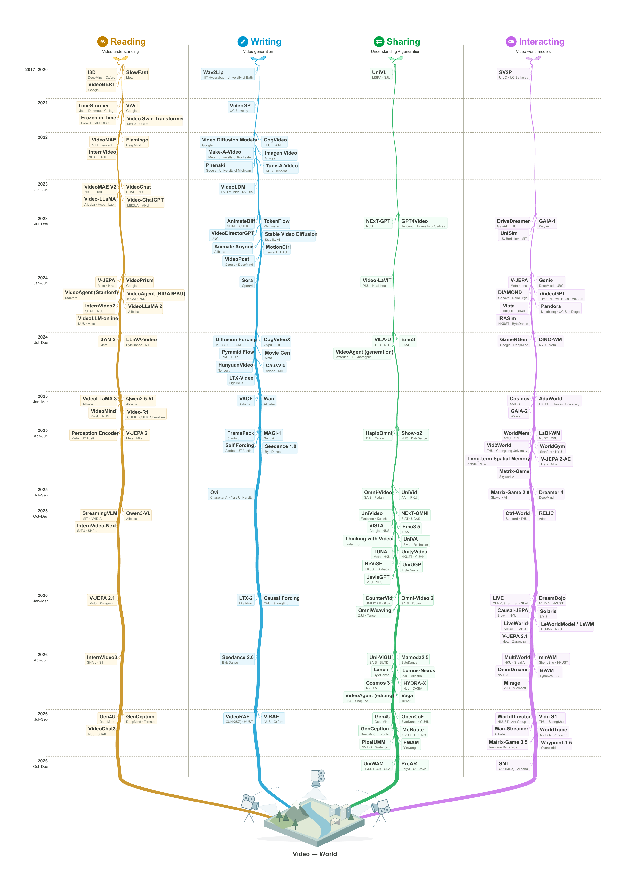
Four operations on the video–world relationship
§4 · Video comprehension
Reading the World
Infer semantic, spatial, temporal, physical, and causal properties
from a partial video trace.
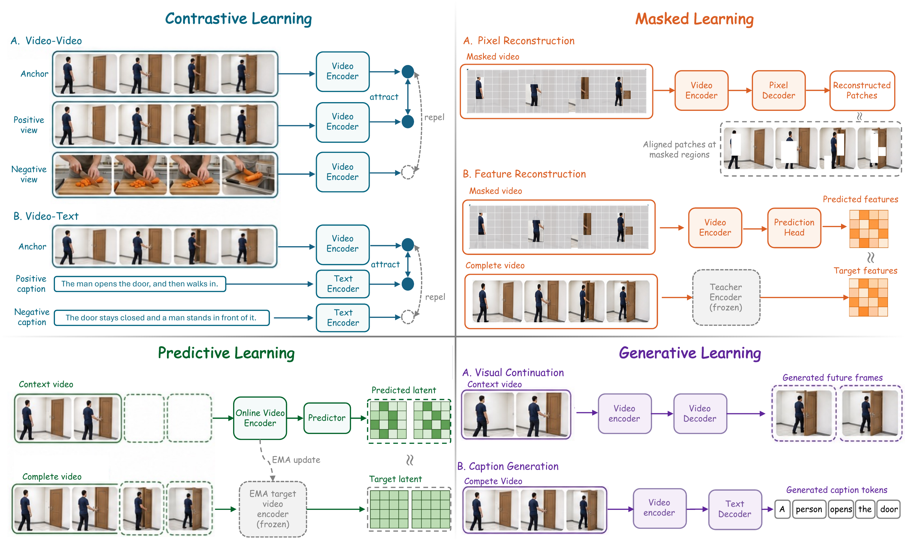
From recognition to maintained state
Video encoders, Video-LLMs, test-time scaling, and video agents offer different ways to gather and retain evidence—from short clips to long, streaming observations.
What establishes understanding?
Does an answer actually depend on the video? Control for text-only, single-frame, shuffled-order, and restricted-context shortcuts.
Representation learning · Video-LLMs · Video agents · Applications
Reading literature 151 ↗§5 · Video generation
Writing the World
Render a video trace from a partial specification:
text, images, audio, motion, or other conditions.

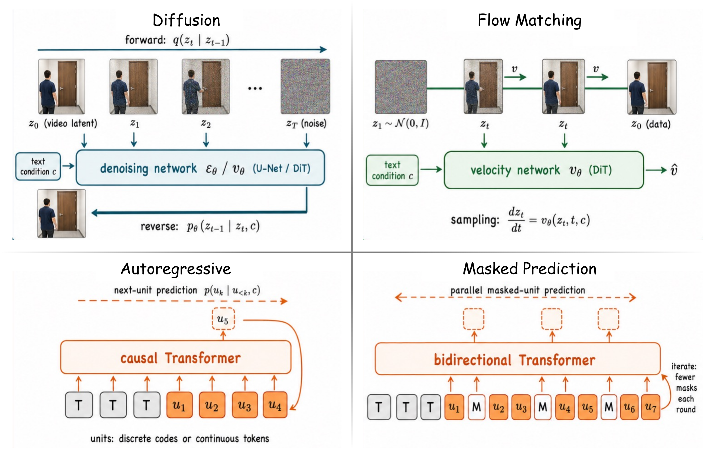

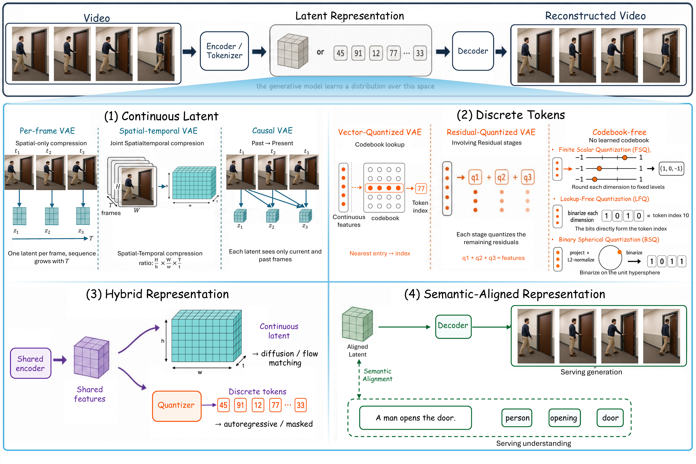

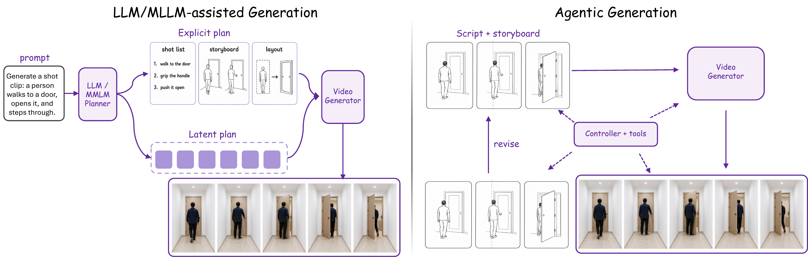

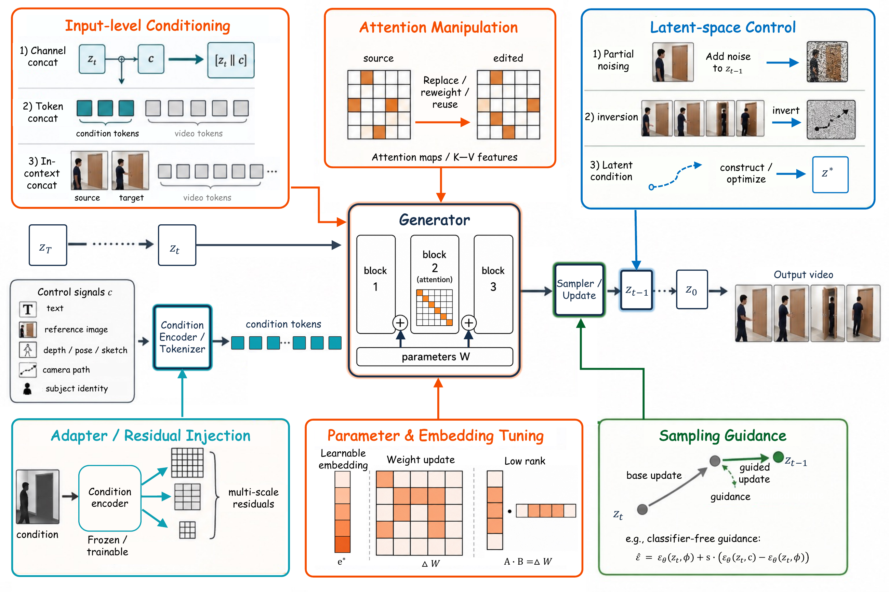
From conditions to trajectories
A prompt fixes only part of a scene. A generator resolves the remaining appearance, motion, and events while preserving the identities and constraints the condition supplies.
More than plausible frames
Does the trace follow the condition, maintain a consistent world, and support its intended use? Visual quality alone does not establish these properties.
Representations · Generative models · Control · Editing & applications
Writing literature 122 ↗§6 · Unified video models
Sharing the World
Couple understanding and generation through common
representations, parameters, interfaces, or objectives.


Coverage, sharing, synergy
Supporting both tasks is capability coverage. Sharing machinery is an architectural claim. Demonstrating that the directions improve one another requires controlled evidence.
Isolate the benefit of coupling
Compare reading and writing with matched data, capacity, compute, and supervision. Test whether cross-direction information flow actually improves either task.
Unified architectures · Joint learning · Editing · Generative reasoning
Sharing literature 60 ↗§7 · Video world models
Interacting with the World
Model how an established state evolves—and how actions,
controls, and new observations change that evolution.
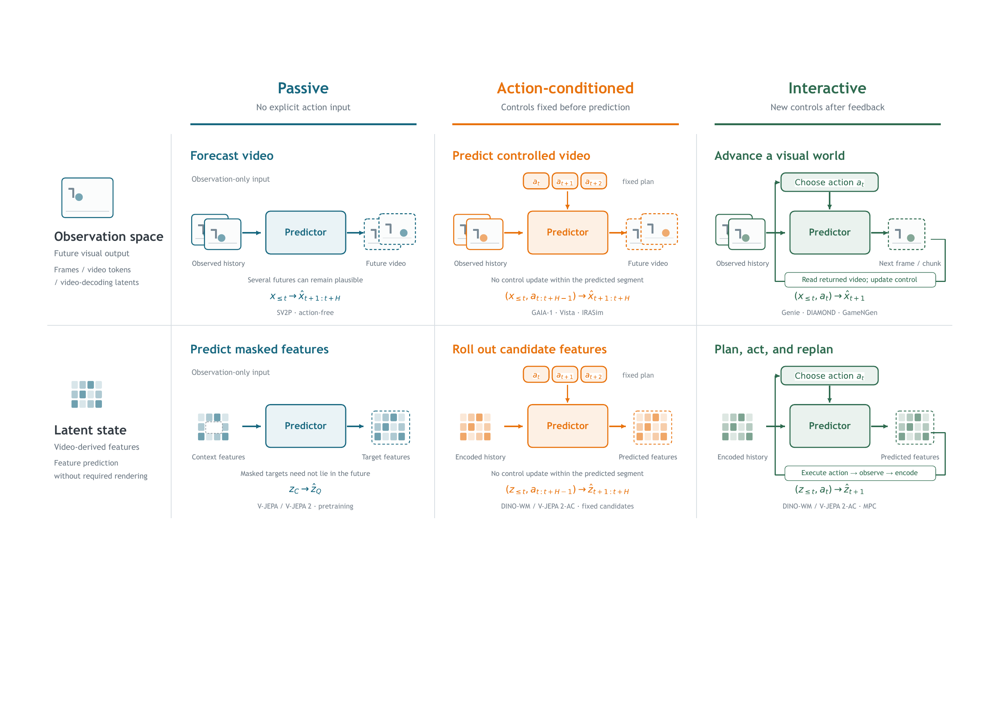
What is predicted?
Observation-space models predict frames, video tokens, or video-decoding latents. Latent-state models predict video-derived features without required rendering.
When can we intervene?
Passive prediction has no action input. Action-conditioned prediction fixes controls beforehand. Interactive prediction accepts new controls after feedback.
“Interactive” describes the control interface, not the attention pattern. Video-decoding latents still belong to observation space.
Control · Memory · Responsiveness · Physical grounding · Planning
Interacting literature 114 ↗Across the four operations
From plausible output to useful decisions.
Stronger world-modeling claims need stronger evidence.
- 01
Plausible output
Credible answers, frames, or features on the immediate task.
- 02
Faithful conditions
Dependence on observed evidence and supplied controls.
- 03
Consistent state
Persistent identity, layout, and physics; controlled transfer for sharing.
- 04
Decision utility
Improved planning, policy learning, or policy evaluation.
§8 · Open challenges & future directions
What remains to be understood?
Seven challenges connect better methods with evidence of why they work.
01Long-horizon world consistency
Memory must track how hidden state evolves, not only retrieve what was last visible.
A useful test
Vary rollout length and revisit distance separately; report degradation alongside memory, latency, and action-update rate.

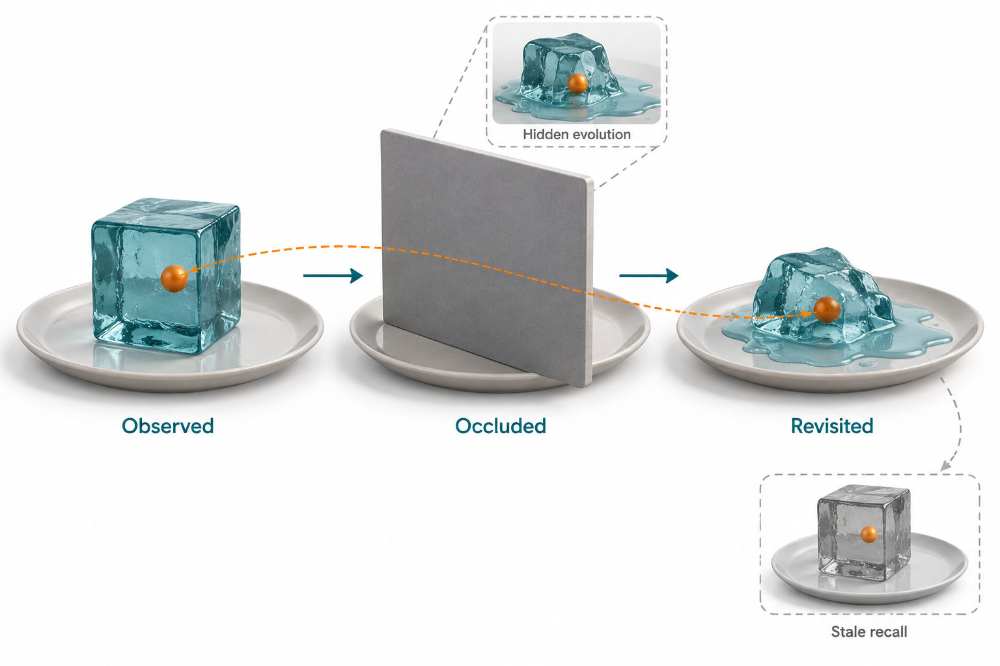
02Physical and causal grounding
Changing an action or physical parameter should change the relevant outcome while leaving unrelated state intact.
A useful test
Compare paired interventions from the same initial state; locate the first violated constraint and when it appears.

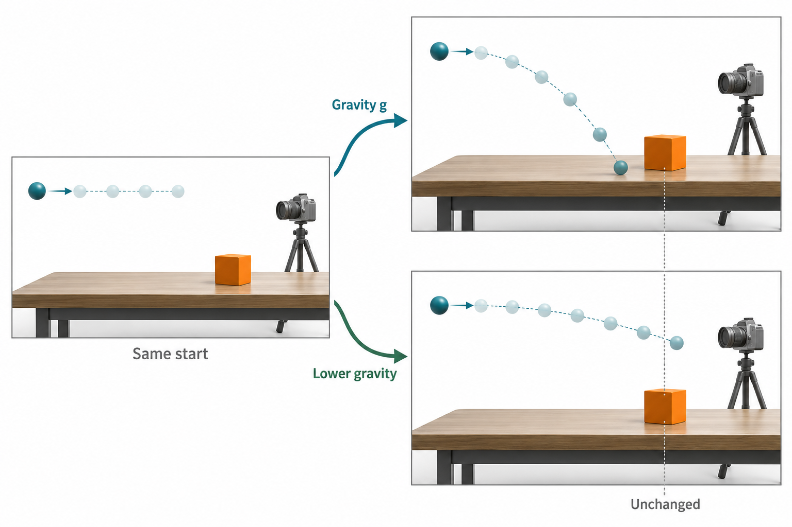
03Measurable synergy in unified models
Doing both tasks does not establish that understanding and generation improve one another.
A useful test
Compare coupled and uncoupled systems under matched data, capacity, compute, and supervision.

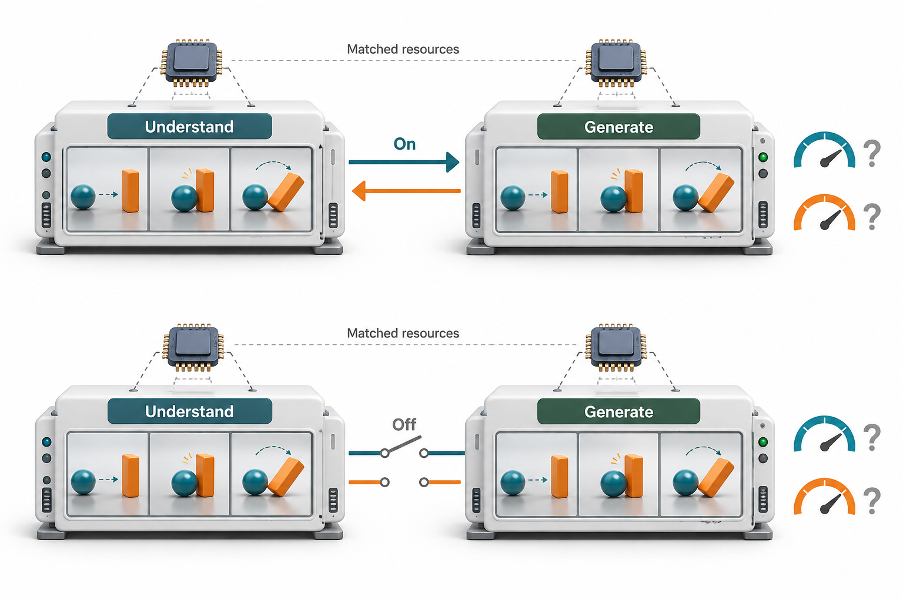
04Standardized evaluation of world properties
Benchmarks use different conditions, horizons, and output spaces, so headline scores are difficult to compare.
A useful test
Align state properties and interventions across operations; report the protocol, budget, failures, and downstream effects.

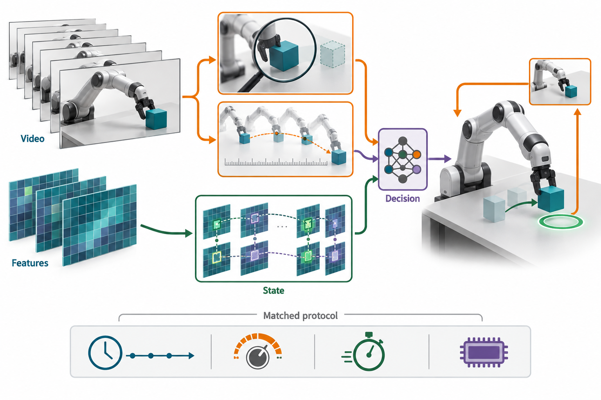
05Scaling control from unlabeled video
Videos show motion but often omit the actions, units, and coordinate systems that caused it.
A useful test
Assess whether inferred controls predict interventions and transfer to a declared action interface, beyond passive reconstruction.

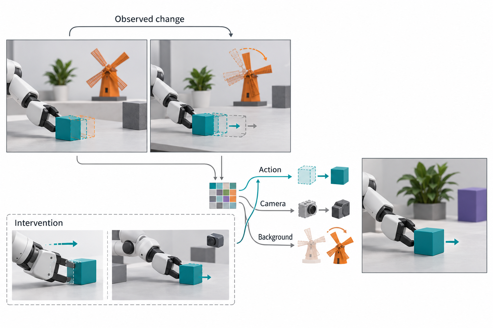
06Generalization across scenes and embodiments
Different cameras, bodies, and action spaces can turn an apparently reusable model into a setting-specific solution.
A useful test
Separate held-out scenes from held-out embodiments and evaluate their combinations under stated adaptation budgets.

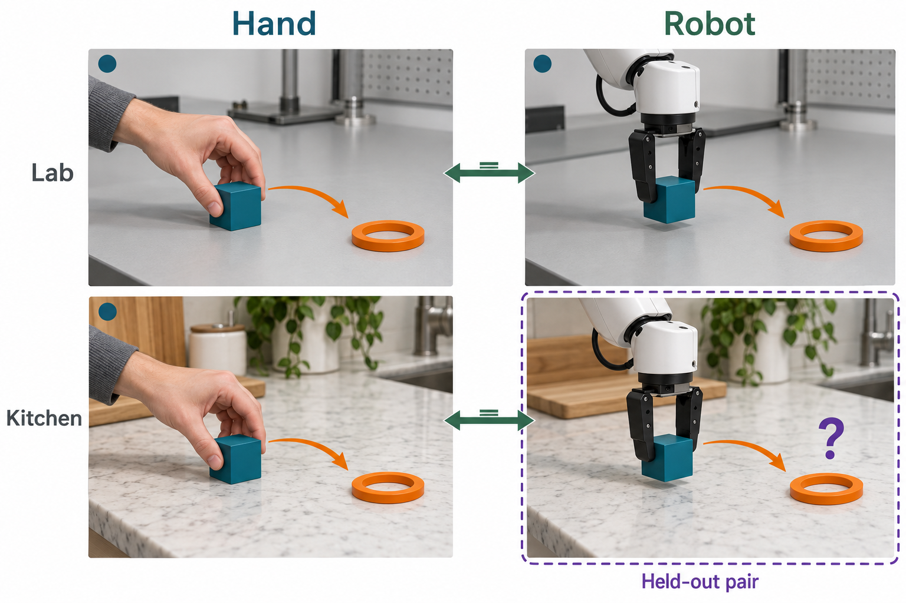
07Stochastic worlds and rare events
Rendering a rare event does not establish how likely it is. Diverse samples can still put probability mass in the wrong places.
A useful test
Use calibration, proper scoring rules, and valid-mode coverage at fixed sample budgets; report invalid outcomes separately.

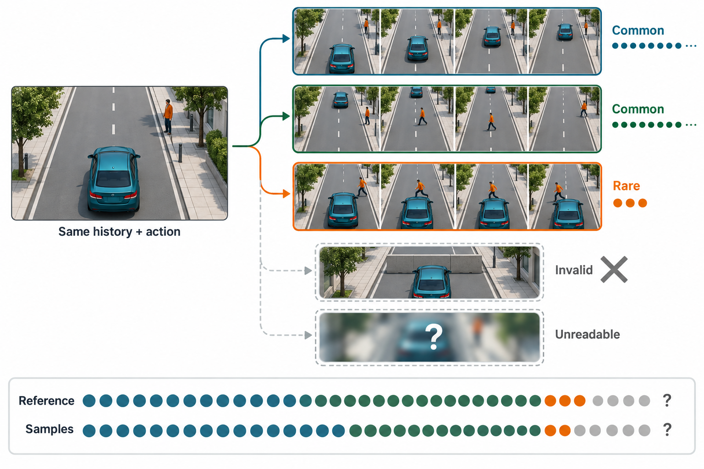
The reference collection
Explore the literature
652 works across the four operations, evaluation, and foundations.
The library could not be loaded. You can still browse all references on GitHub or download the bibliography.
Updated October 15, 2026 · Full reading list on GitHub ↗